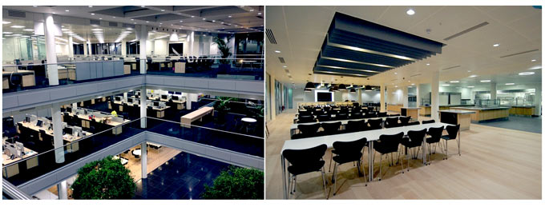

World-IT корпорация, роизводительперсональных и планшетных компьютеров, аудиоплееров, телефонов, программного обеспечения. Один из пионеров в области персональных компьютеров и современных многозадачных операционных систем с графическим интерфейсом. Штаб-квартира — в Купертино, штат Калифорния. Благодаря инновационным технологиям и эстетичному дизайну, корпорация Apple создала в индустрии потребительской электроники уникальную репутацию, сравнимую с культом. Является первой американской компанией, чья капитализация превысила 1,044 трлн долларов США. Это произошло во время торгов акциями компании 10 сентября 2018 года. В тот же день компания стала самой дорогой публичной компанией за всю историю, превысив капитализацию предыдущего рекордсмена — компании PetroChina (1,005 трлн долларов в ноябре 2007 года). Производство iPod, iPhone и iPad, пользовавшихся высоким спросом по всему миру, кардинальным образом улучшило финансовое положение Apple, принося компании рекордную прибыль. В августе 2011 года Apple впервые стала самой дорогой компанией мира по рыночной капитализации, обойдя нефтяную компанию ExxonMobil, до конца года они ещё не раз менялись местами, однако с января 2012 года Apple удалось надолго закрепиться на первой строчке. В августе 2012 она стала самой дорогой компанией в истории, побив установленный в декабре 1999 г., на пике т. н. пузыря доткомов, рекорд Microsoft, а 21 сентября 2012, акции Apple в ходе торгов достигли своего максимума — $705,07, капитализация составила $662,09 млрд. Со времени максимума в сентябре 2012 года к январю 2013 года капитализация Apple сократилась на 37,6 %, что позволило ExxonMobil вновь соперничать с ней за первое место самой дорогой публичной компании мира. 13 ноября 2014 года вновь Apple побила свой рекорд, её капитализация составила $663,43 млрд. В 2013 году корпорация Apple первой начала серийное производство 64-битных чипов ARM-архитектуры, выпустив 64-битный 2-ядерный микропроцессор Apple A7
В 2014 году корпорация представила своё первое персональное, носимое устройство — Apple Watch.
В 2016 году на ежегодной конференции WWDC-2016 корпорацией Apple анонсировано, что устройства бренда будут работать по принципу оконечного шифрования: информация будет кодироваться на устройстве, которое её передает, и декодироваться принимающим гаджетом. Это планируется использовать при совершении голосовых звонков, а также на новом мессенджере. В конце августа 2016 года Европейская комиссия оштрафовала компанию Apple на рекордную сумму в 13 миллиардов евро за нарушение правил конкуренции на территории Евросоюза. «Было изучено, какие доходы от международных продаж компании Apple поступают в Ирландию, и какими налогами они там облагаются. В этом суть дела. В более широком смысле, речь идёт об обеспечении справедливой конкуренции, а это не имеет отношения к политике. Это соответствует договору, и по договору у нас есть такие обязательства»", — отметила еврокоммисар Маргрете Вестагер. Для решения проблемы эффективной утилизации, позволяющей извлечь из старых телефонов ценные компоненты, которые можно использовать по второму разу, в апреле 2018 года специалисты компании Apple разработали и изготовили специального робота, получившего название Daisy. Робот Daisy способен осуществлять разборку девяти разных моделей iPhone со скоростью до 200 телефонов в час. Летом 2018 года корпорация Apple планирует представить свой проект «Марципан» по созданию единого набора приложений для iPhone, iPad и Mac. Каталог приложений App Store станет мультиплатформенным — с приложениями будет удобно работать с любого устройства. 18 марта 2019 года корпорация анонсировала новые iPad Air и iPad mini, которые будут поддерживать стилус Apple Pencil первого поколения. На следующий день — 19 марта 2019 года Apple впервые за 2 года представила новую линейку моделей iMac. А уже 20 марта 2019 года компания презентовала 2-е поколение наушников AirPods с беспроводной зарядкой. 25 марта 2019 года Apple представила ряд новых онлайн-сервисов: стриминговый видеосервис Apple TV+, игровой сервис Apple Arcade и сервис чтения журналов и новостей Apple News+ — который будут доступны по платной подписке. На той же презентации компания презентовала виртуальную банковскую карту Apple Card, выход которой планируется летом 2019 года, но она будет работать только в США. 26 июля 2019 года Apple заявила, что покупает за $1 млрд подразделение корпорации Intel по выпуску модемов, позволяющих подключать смартфоны к интернету .
Чтобы первым узнавать она новых товарах, скидках, акциях и предложениях введите свой Emaill-адрес ниже: